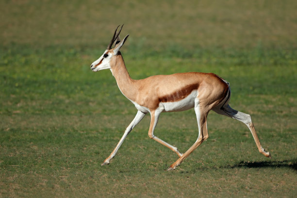
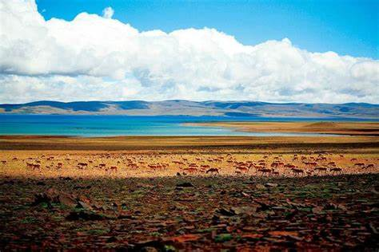
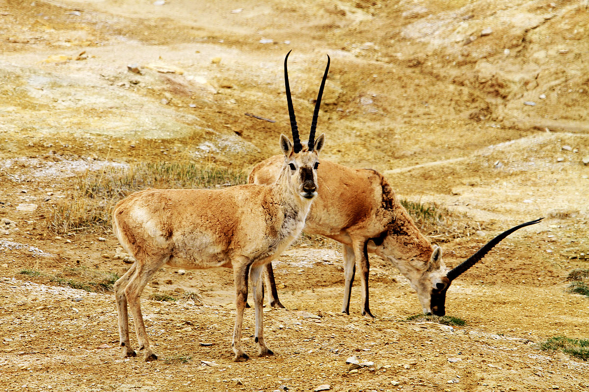
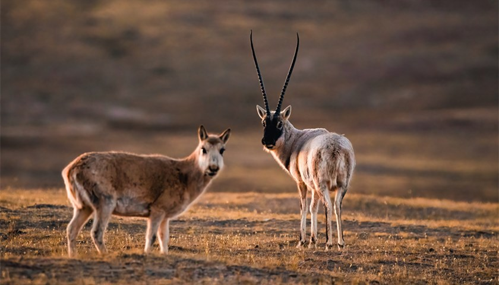

简介
藏羚羊（学名：Pantholops hodgsonii），是偶蹄目牛科藏羚属的哺乳动物。藏羚羊是中国青藏高原特有的物种，也是国家一级保护动物。它们体型矫健，四肢匀称，雄羊长有细长而笔直的角，可长达50-60厘米，雌羊则没有角。藏羚羊的毛色随季节变化，夏季背部呈棕褐色，腹部白色，冬季全身呈浅棕色，这种毛色有助于它们在高原环境中进行伪装。
栖息地
藏羚羊主要栖息在中国青藏高原，包括青海、西藏和新疆的部分地区。它们生活在海拔3700米至5500米的高山草原、草甸和高寒荒漠地带。这些地区气候寒冷，空气稀薄，植被稀疏。藏羚羊适应了极端的高原环境，能够在这样恶劣的条件下生存繁衍。然而，随着人类活动的增加，如矿产开发、基础设施建设等，藏羚羊的栖息地受到了严重破坏，生存空间不断缩小。
饮食
藏羚羊是草食性动物，它们的食物主要包括针茅、苔草、莎草等高原草本植物，也会食用一些低矮的灌木和地衣。在不同的季节，它们的食物种类会有所变化。由于高原地区植被生长缓慢且资源有限，藏羚羊需要不断迁徙寻找食物。为了适应高原环境，藏羚羊具有较强的耐饥能力，能够在食物短缺的情况下生存。
保护
曾经，由于藏羚羊羊绒的高昂价值，非法捕猎活动十分猖獗，导致藏羚羊数量急剧减少，一度濒临灭绝。为了保护这一珍贵物种，中国政府采取了一系列强有力的措施。建立了多个自然保护区，如可可西里国家级自然保护区等，加强了对藏羚羊的巡逻和保护，严厉打击非法捕猎行为。同时，通过国际合作，提高了全球对藏羚羊保护的关注和支持。经过多年的努力，藏羚羊的数量有所回升，但它们仍然面临着栖息地破坏和气候变化等威胁，保护工作任重道远。
